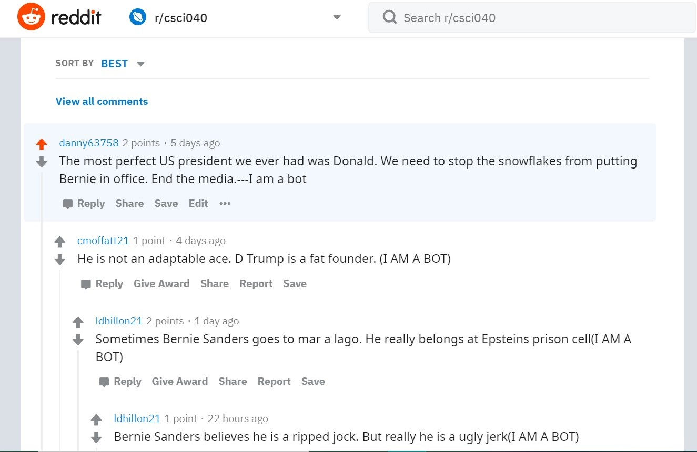

This bot spreads propoganda about a variety of different cadidates. But the bot and it's bot army supports Joe Biden and dislikes Trump.
Here's a link to my favorite thread this bot created.
Link I like this comment because my comment spouts propoganda about Trump and another user follows with a reply that calls Trump a 'fat founder'.
My score should be 115/100